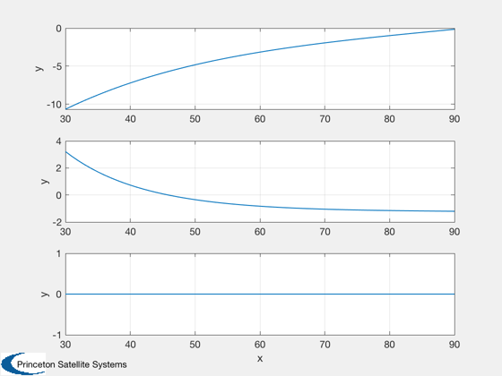
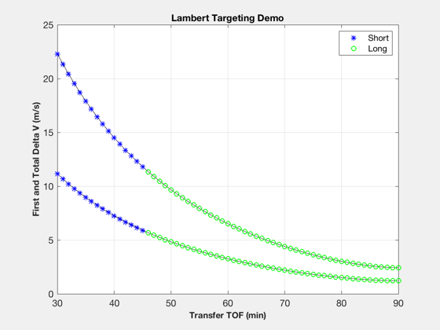
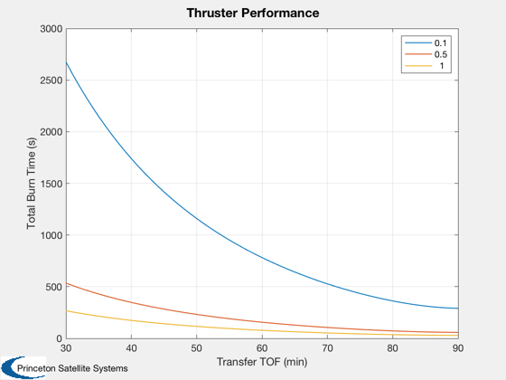
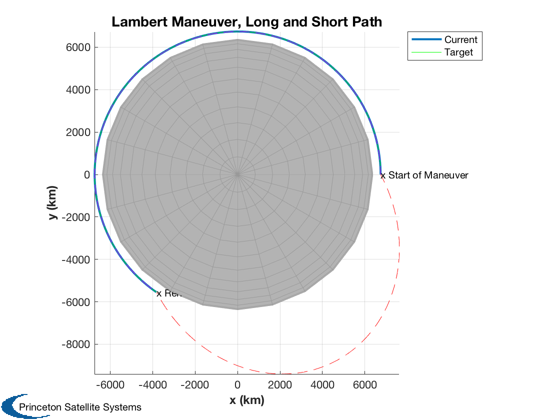

Orbit separation demo
Calculate a delta-V for an in-plane separation and size a thruster to perform the maneuver. This is a bang/bang maneuver.
This demonstrates that a small satellite deployed in LEO can move 1 km away from the "mother ship" in less than one orbit with a range of thrusters. The Lambert delta-V approaches the ideal delta-V as the time approaches one orbit.
Contents
%-------------------------------------------------------------------------- % Copyright 2017 Princeton Satellite Systems, Inc. All rights reserved. %-------------------------------------------------------------------------- % Since version 2017.1 %--------------------------------------------------------------------------
Parameters and ideal solution
% Mission Parameters sma = 6740; % km dSep = 20; % km mass = 12; % kg % Ideal delta-V for 1 revolution. This function can also calculate DVs for % multiple revolutions. nRev = 1; dVPhase = OrbMnvrPhaseChange( sma, dSep/sma, nRev )*1e3; fprintf(1,'1 Rev Delta-V: %f m/s\n',dVPhase);
1 Rev Delta-V: 2.420097 m/s
Lambert delta-V study
Study a single-revolution Lambert maneuver to achieve the phase change. Then, determine how long the thruster(s) would need to fire to achieve the delta-V.
thrusts = [0.1;0.5;1]; % N % Initial orbit el = [6740 0 0 0 0 0]; [r1,v1] = El2RV(el); % Target - 1 km trailing separation delTheta = dSep/sma; elT = [6740 0 0 0 0 delTheta]; [r2,v2] = El2RV(elT); % Transfer times and plotting parameters % Do NOT go more than one revolution. tTrans = [30:90]*60; dVa = zeros(3,size(tTrans,2)); dVb = zeros(3,size(tTrans,2)); tMPlot = zeros(size(tTrans)); % Perform targeting for k = 1:length(tTrans) [dV,tM,ok] = DVTarget(r1,v1,r2,v2,tTrans(k)); dVa(:,k) = dV.a*1e3; dVb(:,k) = dV.b*1e3; tMPlot(k) = tM; end aMag = Mag(dVa); bMag = aMag + Mag(dVb); Plot2D(tTrans/60,dVa) % Generate plot kShort = find(tMPlot>0); kLong = find(tMPlot<0); kEarth = find(tMPlot==0); NewFig('Delta V'); plot(tTrans/60,[aMag;bMag],'k'); hold on hS = plot(tTrans(kShort)/60,[aMag(kShort);bMag(kShort)],'b*'); if ~isempty(kLong) hL = plot(tTrans(kLong)/60,[aMag(kLong);bMag(kLong)],'go'); legend([hS(1) hL(1)],'Short','Long'); end XLabelS('Transfer TOF (min)'); YLabelS('First and Total Delta V (m/s)'); TitleS('Lambert Targeting Demo'); grid on; fprintf(1,'Minimum Lambert Delta-V: %f m/s\n',min(bMag)); % Estimate manuever time vs. thrust; assume constant mass deltaT = mass*(1./thrusts)*bMag; Plot2D(tTrans/60,deltaT,'Transfer TOF (min)','Total Burn Time (s)','Thruster Performance') legend(num2str(thrusts))
Minimum Lambert Delta-V: 2.424115 m/s  
Plot ideal transfer
The long and short way computed by the Lambert algorithm are both shown for clarify, but DVTarget automatically chooses the one with the lowest delta-V.
tTrans = 60*60; % long way (greater than pi mean anomaly change) [dV,tM,ok] = DVTarget(r1,v1,r2,v2,tTrans); % Initial orbits [r1p,v1p] = RVFromKepler(RV2El(r1,v1),linspace(0,tTrans)); [r2p,v2p] = RVFromKepler(RV2El(r2,v2),linspace(0,tTrans)); % first transfer [vTrans,a,p] = LambertTOF( r1, r2p(:,end), tTrans, 1 ); [rT1,v] = RVFromKepler(RV2El(r1,vTrans(:,1)),linspace(0,tTrans)); % second transfer [vTrans,a,p] = LambertTOF( r1, r2p(:,end), tTrans, -1 ); [rT2,v] = RVFromKepler(RV2El(r1,vTrans(:,1)),linspace(0,tTrans)); [h,h1] = Plot3D( r1p, 'x (km)','y (km)','z (km)', 'Lambert Maneuver, Long and Short Path', 6378 ); hold on; h2 = plot3( r2p(1,:), r2p(2,:), r2p(3,:), 'g'); plot3( rT1(1,:), rT1(2,:), rT1(3,:), 'r--'); plot3( rT2(1,:), rT2(2,:), rT2(3,:), 'm--'); text( r1(1,1), r1(2,1), r1(3,1), 'x Start of Maneuver') text( rT2(1,end), rT2(2,end), rT2(3,end), 'x Rendezvous') axis square; axis equal; view(0,90); legend( [h1 h2], 'Current', 'Target' ) %--------------------------------------